1.
无法播放节目？播放窗口空白？黑屏？左上角有个花色小方块？
解决方法：首先应该确认自己的电脑是否安装最新FLASH播放插件，最新版本为(9.0.115)，点击检测您电脑是否安装了FLASH插件，如果页面显示了您的FLASH版本为9.XXXX，便可以直接跳到问题2来检查。如果提示没有安装，点击下载，以下为图解
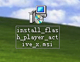
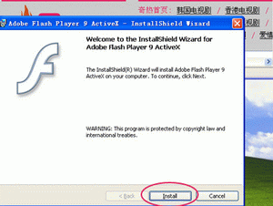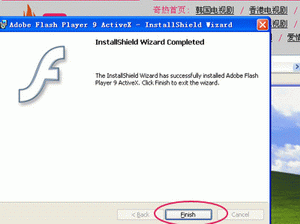
重要：安装完Flash播放器后，需要关闭全部浏览器窗口，重新再打开浏览器方可正常观看视频节目。
推荐：请您使用IE浏览器(IE6，IE7，TT，Maxthon，GreenBrowser，TheWorld均可)来访问本站。FIREFOX（火狐）浏览器将无法正常访问部分优酷的视频节目
2. 安装了FLASH插件后任不能观看？
强烈建议您将IE浏览器的安全级别调成“中级”，IE6下安全级别为高级将无法观看本站视频，以下为图解
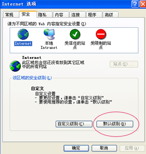
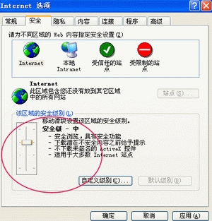
如果您不愿意将浏览器的安全级别下调，建议您修改部分设置，将“运行ActiveX
控件和插件”修改为启用，，以下为图解
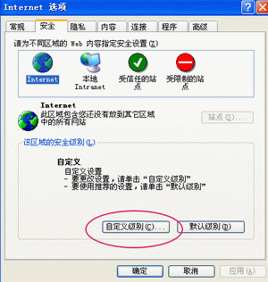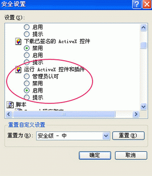
3.双语问题？同一个视频里面能同时听到2种配音语言
具体调整步骤：“开始菜单”-“控制面板”-“音量和音频设备”-“声音、语音和音频设备”-“声音和音频设备”-“高级”，然后拉动音量控制的平衡杆到其中一边，听听是不是你想要的发音，如果不是的话就拉到另外一边，以下为图解
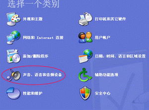
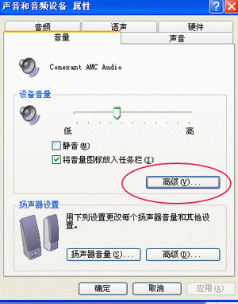
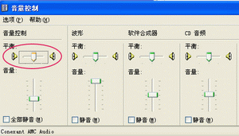
4.
播放不流畅？播到一半就卡住？卡住后弹出一些视频推荐？
播放不流畅的解决方法
- 观看本站视频时，尽量关掉BT、迅雷、网络电视等进程，可以明显提高观看视频的流畅度
- 如果节目看到一半停住了放不过去，最有效的解决方法是：IE浏览器-->工具-->
Internet选项-->点击“删除文件”按钮，然后关闭浏览器重新打开，下面附详细图解
部分ADSL和共享上网用户在网络高峰时段观看本站视频会有卡的情况，推荐以下两个技巧
- 部分视频如果出现卡的情况，可暂停一会，让其缓冲后再播放
- 可提前打开下一集的页面，播放后按暂停（不要关闭），让其缓冲，这样看完这集就可以很流畅的看下一集了
.gif) 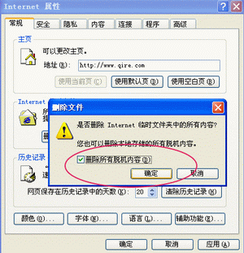
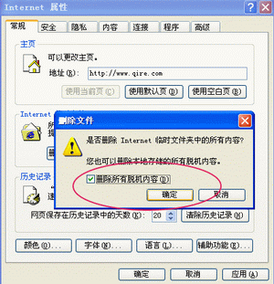
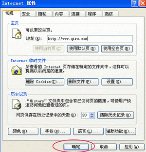
5. 无法选集，在剧情简介的右边出现一段提示“重要提示：
如果您看到这段话，说明您的浏览器不支持或禁用Javascript脚本，将没有办法完全的使用本站功能
比如：无法看到电视剧的选集项，网站搜索功能无法使用等等
请启用Javascript脚本功能或者使用支持Javascrijpt脚本的浏览器。”
请将IE浏览器的安全级别调整为“中级”，如果您不愿意将浏览器的安全级别下调，建议您按以下图解修改部分设置
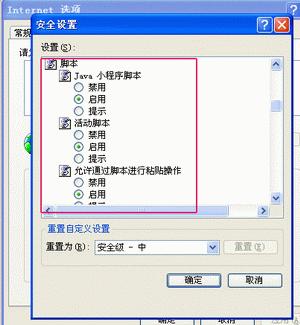
6.
播放器左上角有个白色的小叉，使用360修复Flash漏洞而导致看不了在线视频解决方法
解决办法：
1.下载微软subinacl.msi
http://download.microsoft.com/download/1/7/d/17d82b72-bc6a-4dc8-bfaa-98b37b22b367/subinacl.msi
安装
2.下载reset_minimal
http://www.adobe.com/support/flashplayer/ts/documents/fb1634cb/reset_minimal.zip
解压缩后，将reset_minimal复制到C:\Program
Files\Windows Resource
Kits\Tools\目录下（即第一步安装的那个软件的所在目录），执行reset_minimal，执行时不要使用电脑，执行完毕后提示“按任意键退出”。
3.下载flashplayer卸载器
http://download.macromedia.com/pub/flashplayer/current/uninstall_flash_player.exe
执行卸载操作
4.下载flashplayer10
http://fpdownload.macromedia.com/get/flashplayer/current/licensing/win/install_flash_player_10_active_x.exe
安装，搞定。
{kind=link}
{kind=link}
{kind=link}
{kind=link}
{kind=link}
{kind=link}
{kind=link}
{kind=link}
{kind=link}
.gif){kind=link}
{kind=link}
{kind=link}
.gif){kind=link}
.gif){kind=link}
.gif){kind=link}
.gif){kind=link}
{kind=link}